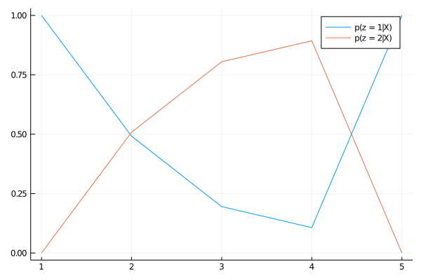

Inference
Baum-Welch algoritm (forward-backward)
The Baum-Welch algorithm computes the probability to be in a state i at time $n$:
\[p(z_n = i | x_1, ..., x_N)\]
It is implemented by the αβrecursion and the resps functions.
MarkovModels.αβrecursion — Functionαβrecursion(fsm, llh[, pruning = nopruning])Baum-Welch algorithm per state in the log domain. This function returns a tuple (lnαβ, ttl) where lnαβ is a sparse representation of the responsibilities and ttl is the log-likelihood of the sequence given the inference fsm.
MarkovModels.resps — Functionresps(fsm, lnαβ[, dense = false])Convert the output of the αβrecursion to the per-frame pdf responsibilities. The returned value is a dictionary whose keys are pdf indices.
Example
First, we create the inference FSM:
using MarkovModels
emissionsmap = Dict(
"a" => 1,
"b" => 2,
"c" => 1
)
fsm = LinearFSM(["a", "b", "c"], emissionsmap)
for state in states(fsm)
(isinit(state) || isfinal(state)) && continue
link!(state, state)
end
fsm = fsm |> weightnormalize
Note that state "a" and "c" share the same emission pdf.
As we don't have real distributions/data we simply simulate some fake per-pdf and per-frame log-likelihood:
D, N = 2, 5 # number of pdfs, number of frames
llh = randn(D, N)Finally, we run the Baum-Welch algorithm:
lnαβ, ttl = αβrecursion(fsm, llh)
γ = resps(fsm, lnαβ)
using Plots
p = plot()
plot!(p, γ[1], label = "p(z = 1|X)")
plot!(p, γ[2], label = "p(z = 2|X)")
plot!(p, γ[3], label = "p(z = 3|X)")
Getting the label sequences
To generate a label sequence from some data, you can either:
- compute the most likely sequence of labels (see
beststring) - draw a random sequence of label from $p(W|x_1, ..., x_N)$ where $W$ is a sequence of labels of any length (see
samplestring)
MarkovModels.beststring — Functionbeststring(fsm, llh[, pruning = nopruning, labelfilter = x -> true])Returns the best sequence of the labels given the log-likelihood llh.
MarkovModels.samplestring — Functionsamplestring(fsm, llh[, nsamples = 1, pruning = nopruning, labelfilter = x -> true])Sample a sequence of labels given the log-likelihood llh.
Pruning
The inference functions (αβrecursion, beststring and samplestring) can be performed with a pruning strategy. This is necessary when the inference FSM is huge potentially leading to very long computational time. We propose two default strategies:
MarkovModels.SafePruning — Typestruct ThresholdPruning
...
endPrune the states that cannot reach the final state before the end of the sequence.
Constructor
SafePruning(fsm)MarkovModels.ThresholdPruning — Typestruct ThresholdPruning
...
endPrune the active states (tokens) that have weights lower than the maximum weight at a given time frame minus a threshold Δ. The lower the threshold Δ the more the pruning:
- when
Δ < 0all paths are discarded, don't use negative threshold !! Δ == 0greedy decoding, only keep the most likely state at each time stepΔ = +∞no pruning
Constructor
ThresholdPruning(Δ)ThresholdPruning is not safe in the sense that it does not guarantee that, after pruning, a valid path will remain. You can build a safe threshold-based pruning by combining (in the given order) the two strategies:
ThresholdPruning(100) ∘ SafePruning(fsm)